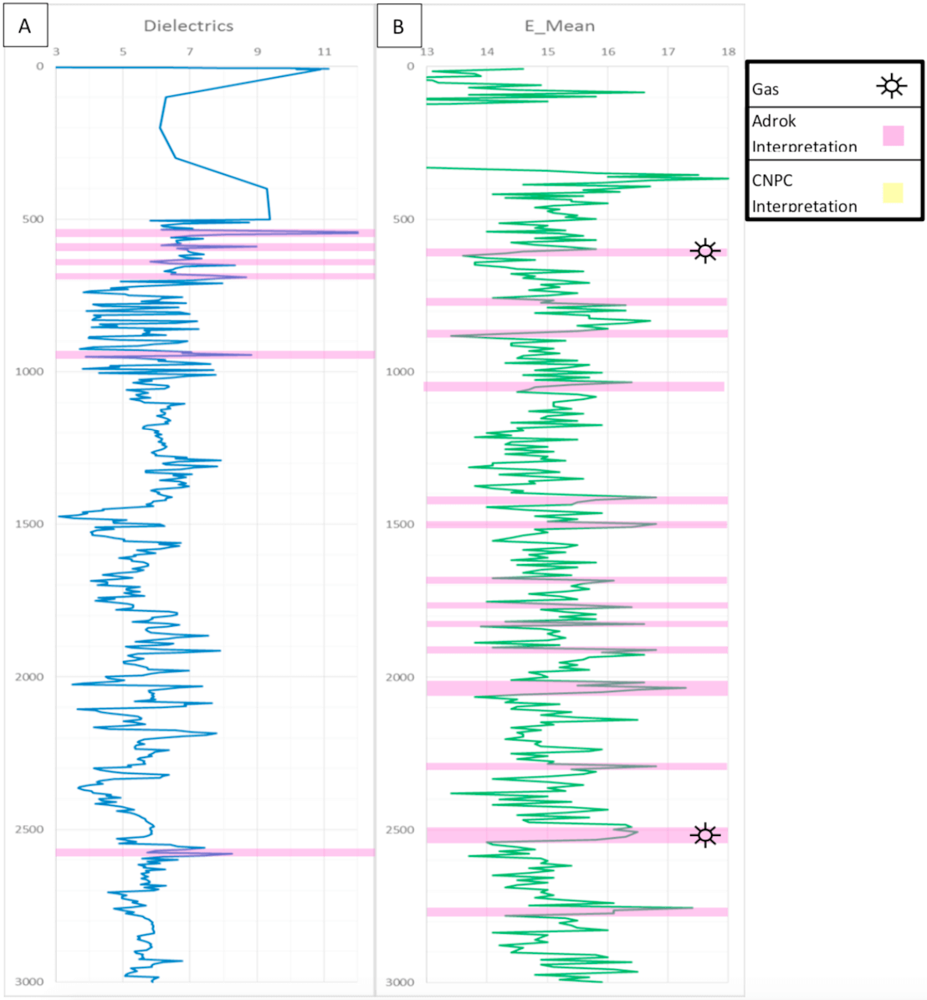

Onshore petroleum surveys in China
Project aims
The survey was designed to achieve a proof of concept and test application of Adrok’s patented proprietary technology at Sinopec’s Sichuan oilfield (Figures A and B).
The survey objectives are as follows:
- Achieve a proof of concept of the ADR technology.
- Help CCDC/CNPC to understand the processing methodology of ADR by ADROK.
- Assess ADR’s potential capabilities in order to outline the tool’s potential contribution to CCDC/CNPC exploration activities.
Exploration/Project challenges
The ADR field survey was conducted over an 8 day period from 25th January to 2rd February 2015. Five (5) V-bore sites were gathered overall by Adrok’s survey.
 Figure A: Figure 1: Location map of Sichuan fieldwork survey.
Figure A: Figure 1: Location map of Sichuan fieldwork survey.
 Figure B: Location map showing the individual site surveys.
Figure B: Location map showing the individual site surveys.
Adrok’s results
The first step of the analysis was the correlation of the ADR data and the training information in hole N203. This showed that there are two distinct ADR signatures matching with the gas layer from the client data:
- E-Mean (128): Energy variability (Max-Min) greater than a range of 1.9
- Dielectric constant: DC values greater than the value 8.0
Adrok found that ADR measured dielectrics equal to or above 8.0 matched with gas in the training data. This was unexpected, as gas normally responds with an ADR dielectric of around 4.0 to 5.0. Higher dielectrics may be present due to the reservoir rock increasing the dielectric value. Adrok has found that Limestone has ADR dielectrics of 7.0 to 9.0; this may have caused the higher dielectrics.
These criteria were identified and highlighted in their respective graphs. Any depth where both criteria are present is considered to be a potential gas target. High resolution analysis (E-Mean 16 pixel results) was then conducted over specific target. These were chosen due to the depth similarities with the training data.
 Table 1: Shows the depth and thickness of the interpreted gas reservoir.
Table 1: Shows the depth and thickness of the interpreted gas reservoir.
The error shown in Table 1 is calculated from the maximum thickness of the ADR field image at 3000m and then split equally based on the dielectrics determined for each layer. The equal time steps are converted to depth intervals and this equates to energy depth intervals of around 7-8m (i.e. energy levels are sampled every 7-8m). This is an internal error measurement in Adrok’s ADR data (and does not represent an error from comparing ADR data to real-world subsurface earth measurements).
Figure C represents the step by step methodology that Adrok followed during the data processing, interpretation and reporting period and aims to give a better understanding of the way of working for the completion of Sichuan project. Steps A to H are parts of the Workflow 4 of Adrok’s Geophysical Survey Workflows and steps I to K are parts of Workflows 5 and 6.
The main findings from this project are displayed on the following pages.
Processing flow chart (frame chart)
 Figure C: Adrok’s processing flow chart
Figure C: Adrok’s processing flow chart
Training data H3 (N203):
E-Mean (128): Energy variability (Max-Min) greater than 1.9
Dielectric constant: DC values greater than 8.0
E-mean (Figure 1B) is to be used as the primary tool for the identification for the gas layer. However, this methodology creates multiple areas where it interprets gas to be. Dielectrics (Figure 1A) were used to remove as many of the E-Mean multiples as possible to improve the accuracy of the final interpretation. Depths where both Dielectrics and E-Mean agree are shown with the symbol for gas.
Figure : Training data H3 (N203) Dielectrics (A) and E-Mean (B) interpretation overlay. Figure 2: Training data H3 (N203) E-Mean 128 pixels (A), E-Mean 16 pixels (B).
Figure 2: Training data H3 (N203) E-Mean 128 pixels (A), E-Mean 16 pixels (B).
E-Mean 128 (Figure 2A) was enhanced to the higher resolution 16 pixels per image (Figure 2B). This gives more accurate depths and thickness of the gas layer, placing the final depth at 2362.66m – 2397.97m at a thickness of 35.31m.
Blind hole H1 (N211):
E-Mean (128): Energy variability (Max-Min) greater than 1.9
Dielectric constant: DC values greater than 8.0
E-mean (Figure 3B) is to be used as the primary tool for the identification for the gas layer. However, this methodology creates multiple areas where it interprets gas to be. Dielectrics (Figure 3A) were used to remove as many of the E-Mean multiples as possible to improve the accuracy of the final interpretation. Depths where both Dielectrics and E-Mean agree are shown with the symbol for gas.
Figure 3: Blind hole H1 (N211)Dielectrics (A) and E-Mean (B) interpretation overlay. Figure 4: Blind hole H1 (N211)E-Mean 128 pixels (A), E-Mean 16 pixels (B).
Figure 4: Blind hole H1 (N211)E-Mean 128 pixels (A), E-Mean 16 pixels (B).
E-Mean 128 (Figure 4A) was enhanced to the higher resolution 16 pixels per image (Figure 4B). This gives more accurate depths and thickness of the gas layer, placing the final depth at 2367.05m – 2406.52m at a thickness of 39.47m.
Blind hole H2 (N201):
E-Mean (128): Energy variability (Max-Min) greater than 1.9
Dielectric constant: DC values greater than 8.0
E-mean (Figure 5B) is to be used as the primary tool for the identification for the gas layer. However, this methodology creates multiple areas where it interprets gas to be. Dielectrics (Figure 5A) were used to remove as many of the E-Mean multiples as possible to improve the accuracy of the final interpretation. Depths where both Dielectrics and E-Mean agree are shown with the symbol for gas.
Figure 5: Blind hole H2 (N201)Dielectrics (A) and E-Mean (B) interpretation overlay. Figure 6: Blind hole H2 (N201)E-Mean 128 pixels (A), E-Mean 16 pixels (B).
Figure 6: Blind hole H2 (N201)E-Mean 128 pixels (A), E-Mean 16 pixels (B).
E-Mean 128 (Figure 6A) was enhanced to the higher resolution 16 pixels per image (Figure 6B). This gives more accurate depths and thickness of the gas layer, placing the final depth at 2455.01m – 2487.98m at a thickness of 32.97m.
Blind hole H5 (NX201):
E-Mean (128): Energy variability (Max-Min) greater than 1.9
Dielectric constant: DC values greater than 8.0
E-mean (Figure 7B) is to be used as the primary tool for the identification for the gas layer. However, this methodology creates multiple areas where it interprets gas to be. Dielectrics (Figure 7A) were used to remove as many of the E-Mean multiples as possible to improve the accuracy of the final interpretation. Depths where both Dielectrics and E-Mean agree are shown with the symbol for gas.
 Figure 7: Blind hole H5 (NX201)Dielectrics (A) and E-Mean (B) interpretation overlay. Figure 8: Blind hole H5 (NX201)E-Mean 128 pixels (A), E-Mean 16 pixels (B).E-Mean 128 (Figure 8A) was enhanced to the higher resolution 16 pixels per image (Figure 8B). This gives more accurate depths and thickness of the gas layer, placing the final depth at 2488.5m – 2538.14m at a thickness of 49.64m. Adrok chose to focus on the deeper potential gas target, due to the similarity in depth compared with results from holes H1 (N211), H2 (N201) and H3 (N203).
E-Mean Profile of 3 holes together (N201, N203 and NX201)
Figure 9: E-Mean (128 pixels) results for all holes, with all possible gas layers highlighted in pink. Figure 10: E-Mean (16 pixels) results for all holes, with all possible gas layers highlighted in pink.
Figure 10: E-Mean (16 pixels) results for all holes, with all possible gas layers highlighted in pink.